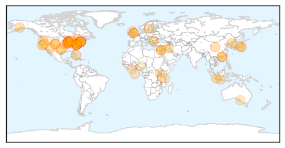
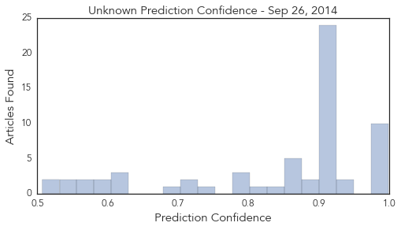

Unknown
30-Day Web Trend
0 alerts, 0 warnings
30-Day Twitter Trend
0 alerts, 0 warnings
Article Locations
Article Confidences
Top Articles:
- 0.999
- Monroe: No confirmed cases of enterovirus D68
- 0.998
- 10 children in Dallas County have enterovirus D68, CDC confirms
- 0.997
- 8 test positive for enterovirus-68 at Baystate in Springfield
- 0.990
- Virus probed in paralysis cases in 9 Colorado kids
- 0.987
- 10 cases of enterovirus-D68 confirmed in Dallas County
- 0.987
- Virus probed in paralysis cases in 9 Colorado kids
- 0.986
- Hamilton had 96 cases of EV-D68, but virus now declining : Report
- 0.985
- News Scan for Sep 26, 2014
- 0.979
- Enterovirus D-68 cases confirmed in Baystate patients
- 0.974
- 4 children in Suffolk have enterovirus, officials say
- 0.936
- Raigmore ward closed by bug outbreak
- 0.926
- Virus probed in paralysis cases in 9 Colorado children
- 0.924
- Test results confirm Enterovirus case in NM
- 0.917
- Chicago Tribune
- 0.917
- Chicago Tribune
- 0.917
- Chicago Tribune
- 0.917
- Chicago Tribune
- 0.917
- Chicago Tribune
- 0.917
- Chicago Tribune
- 0.917
- Chicago Tribune
- 0.917
- Chicago Tribune
- 0.917
- Chicago Tribune
- 0.917
- Chicago Tribune
- 0.917
- Chicago Tribune
- 0.917
- Chicago Tribune
- 0.917
- Chicago Tribune
- 0.917
- Chicago Tribune
- 0.917
- Chicago Tribune
- 0.917
- Chicago Tribune
- 0.917
- Chicago Tribune
- 0.917
- Chicago Tribune
- 0.917
- Chicago Tribune
- 0.917
- Chicago Tribune
- 0.917
- Chicago Tribune
- 0.917
- Chicago Tribune
- 0.904
- CDC confirms two Delaware enterovirus cases
- 0.899
- Paralysis, muscle weakness strike 9 Colorado kids, CDC issues warning
- 0.883
- KRNV, Reno, NV
- 0.866
- Obama, Netanyahu to meet at White House next week
- 0.866
- U.S. expects Afghan president-elect to sign agreement soon -W. House
- 0.866
- U.S. pleased with British vote to join fight against Islamic State -W.House
- 0.866
- An injured protester is taken away by rescue workers as hundreds storm into a restricted area at the government headquarters, after a rally in Hong Kong
- 0.866
- ADVISORY-Thomson Reuters Foundation stories now feature on Eikon
- 0.850
- 3 cases of Enterovirus reported in Triangle
- 0.812
- Nurses sue Boston hospital over flu shot requirement
- 0.798
- No confirmed Enterovirus cases in Oregon yet
- 0.796
- Officials Probe Whether Enterovirus D68 Caused N.J. 4-Year-Old’s Death « CBS New York
- 0.782
- Flu jabs for pregnant women ‘should be priority’
- 0.747
- Mass vaccination of dogs urged by scientist to stamp out rabies
- 0.722
- Flu Vaccine Clinic Delay in Ingham County
Showing top 50 articles...
Top Tweets:
- 0.709
- FluFactFriday: Getting a flu vaccine protects moms & their babies from flu, but only 1/2 of all pregnant women were vaccinated last season
- 0.510
- Ochenta muertos, 12 de ellos decapitados, en una ofensiva talibán en Afganistán: Al menos 80 miembros de las f... http://t.co/HU4vlt00tK
Influenza
30-Day Web Trend
11 alerts, 2 warnings

30-Day Twitter Trend
0 alerts, 0 warnings

Article Locations

Article Confidences

Top Articles:
- 0.998
- Indiana confirms 19 cases of respiratory virus
- 0.985
- The Daily Free Press — The Daily Free Press
- 0.965
- Getting ready for respiratory viruses
- 0.883
- Ebola most challenging epidemic in decades
- 0.867
- County health department kicks off annual flu vaccine drive
- 0.849
- Influenza Vaccination Coverage Among Pregnant Women – United States, 2013-14 Influenza Season
- 0.697
- Now one in seven patients cannot be cured using antibiotics after they were handed out too freely by GPs
- 0.664
- Hamilton preschooler dies of respiratory illness, district says in phone alert to parents
- 0.584
- Why We Don't Have A Cure For The Common Cold
Top Tweets:
-
No tweets found for Sep 26, 2014